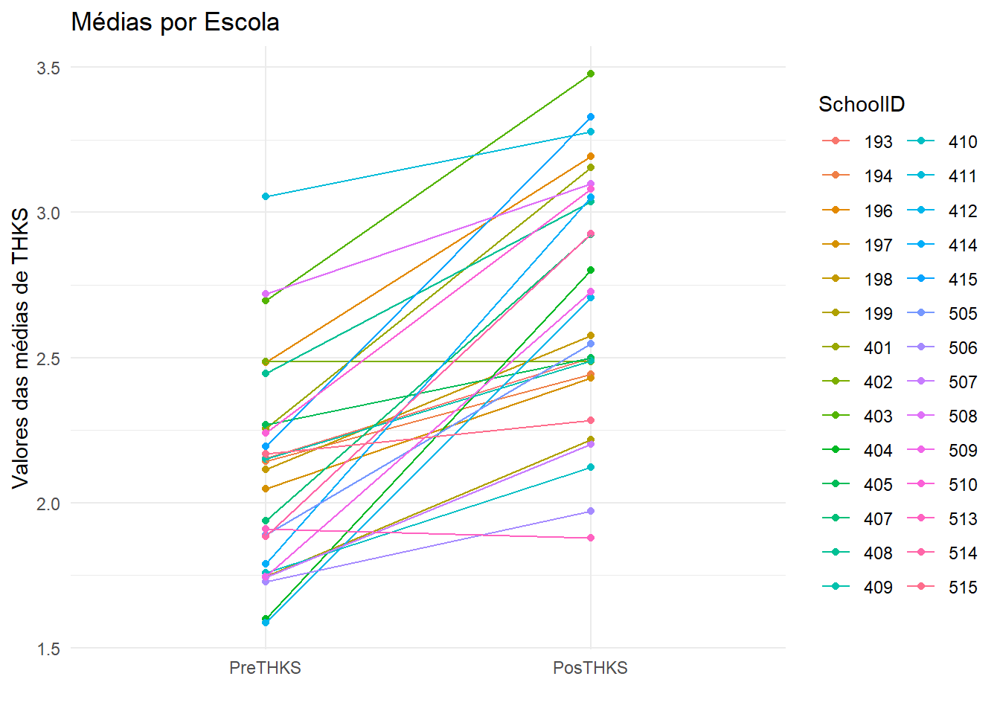
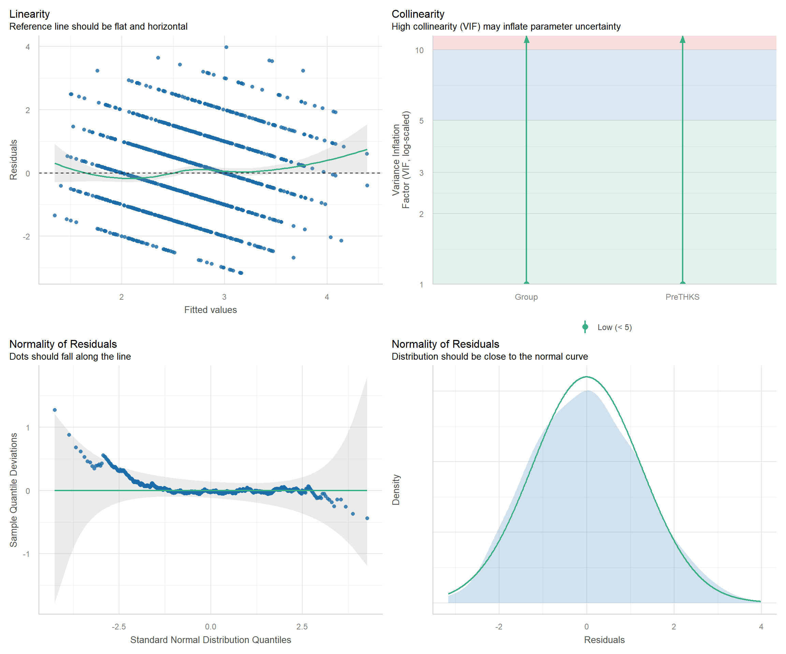
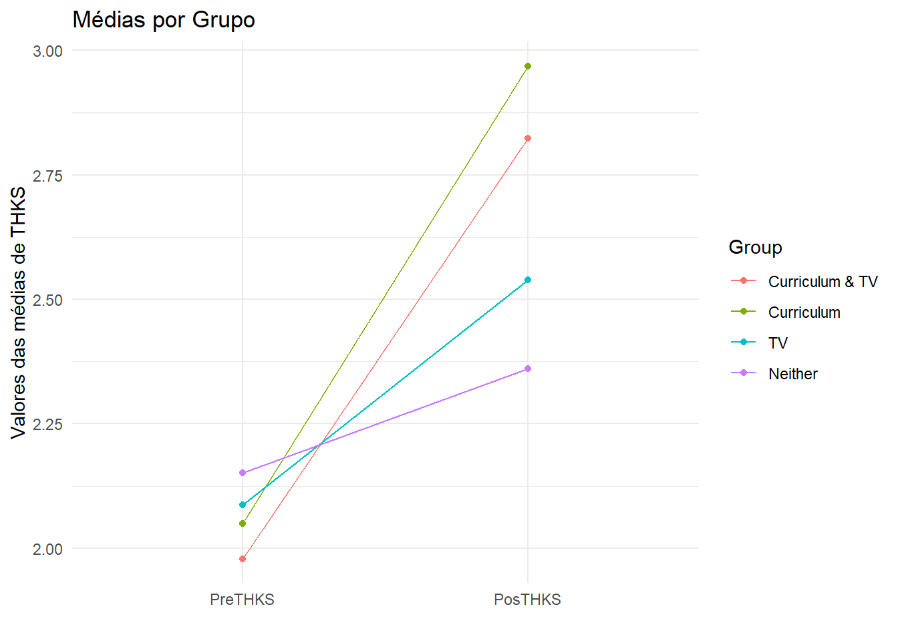
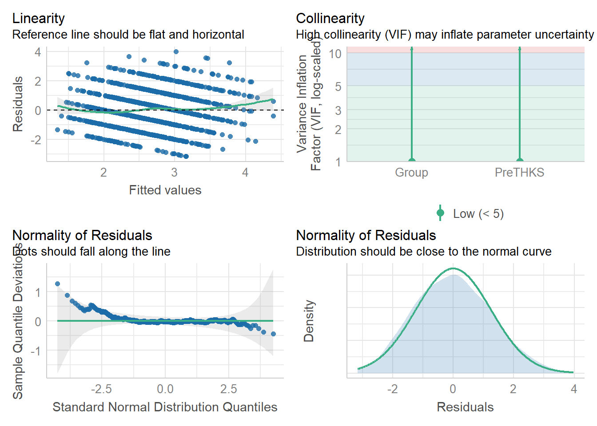
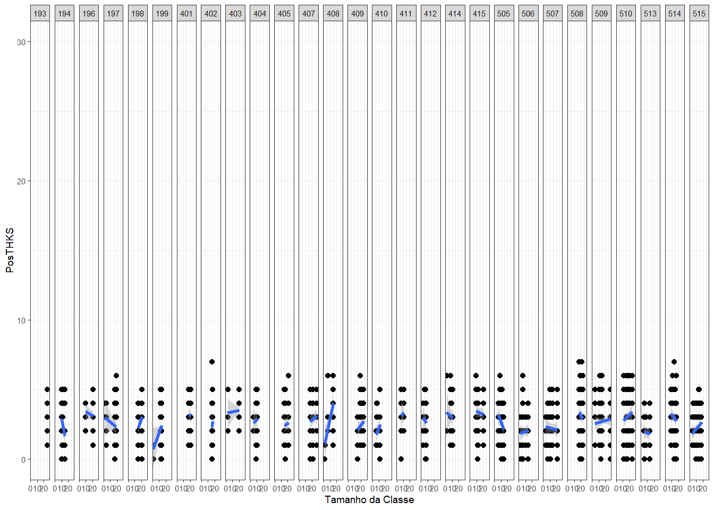
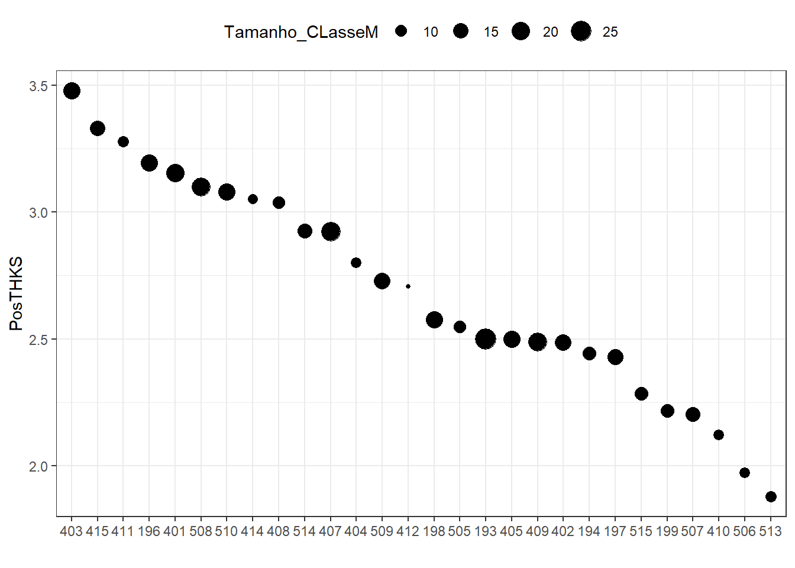
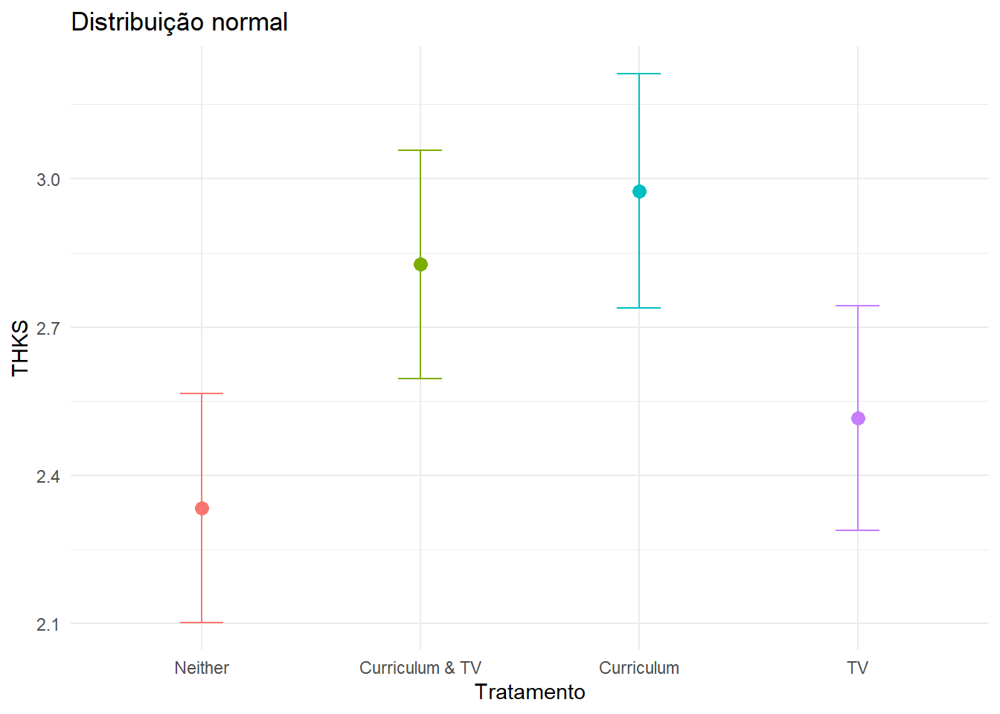

# Seu código R aqui
library(emmeans)
library(lme4)
library(nlme)
library(flexplot)
library(foreign)
library(dplyr)
library(multcomp)
library(effects)
library(sjstats)
library(tm)
library(report)
library(ggplot2)
library(forcats)
library(performance)
library(rempsyc)
library(easystats)
library(fitdistrplus)
library(sjPlot)
library(kableExtra)
library(psychometric)
library(misty)4 Lista 4 - GMM e ICC
Para resolver a lista de exercícios 4 vamos utilizar o banco de dados THKS2. O banco apresenta dados do programa “Television, School and Family Smoking Prevention and Cessation Project (TVSFP)”, que avaliou a eficácia de um programa presencial para parar de fumar (Currículo) em conjunto com um programa em vídeo (TV) para prevenir o início do tabagismo e fortalecer a resiliência daqueles que deixaram de fumar.
O estudo adotou um delineamento 2x2 com quatro grupos distintos, considerando a presença do “school-based social-resistance curriculum (CC)” e do “television-based prevention program (TV)”. Esses grupos foram categorizados como “Curriculum & TV”, “Curriculum”, “TV” e “Neither”. Este último indicando que as pessoas do grupo não participaram de nenhuma intervenção.
A randomização da amostra ocorreu em dois níveis: por escolas e por salas de aula. O banco de dados inclui informações de 1600 alunos de 135 classes distintas em 28 escolas localizadas em Los Angeles. A variável dependente, a Escala de Conhecimento em Tabaco e Saúde (THKS), foi avaliada antes da randomização e após a implementação dos efeitos de cada grupo.
Com base nestes dados, por favor, apresente as questões específicas e descreva os resultados utilizando as notações apropriadas.
4.1 Pacotes que vamos utilizar
dataset = read.spss("THKS2.sav", to.data.frame=TRUE)Como já mencionado no capítulo anterior, é muito importante averiguar os tipos de variáveis antes de começar as análises. Para isso vamos utilizar a função glimpse().
glimpse(dataset)Rows: 1,600
Columns: 5
$ SchoolID <dbl> 404, 404, 404, 404, 404, 404, 404, 404, 404, 404, 404, 404, 4…
$ ClassID <dbl> 404101, 404101, 404101, 404101, 404101, 404101, 404101, 40410…
$ PreTHKS <dbl> 1, 2, 4, 3, 1, 1, 2, 0, 1, 2, 2, 1, 1, 0, 4, 1, 2, 1, 2, 2, 2…
$ PosTHKS <dbl> 3, 4, 2, 3, 2, 1, 3, 5, 2, 3, 4, 3, 1, 0, 4, 5, 3, 3, 4, 2, 3…
$ Group <fct> Curriculum & TV, Curriculum & TV, Curriculum & TV, Curriculum…Ao analisar os arquivos provenientes de outros programas, percebe-se que todas as variáveis numéricas são tratadas como contínuas. No entanto, todas as variáveis no banco de dados são, na verdade, categóricas. Portanto, é necessário modificar o tipo das variáveis antes de iniciar as análises. Para isso vamos utilizar a função as.factor() nas 4 variáveis contínuas.
dataset$SchoolID = as.factor(dataset$SchoolID)
dataset$ClassID = as.factor(dataset$ClassID)
dataset$PreTHKS = as.integer(dataset$PreTHKS)
dataset$PosTHKS = as.integer(dataset$PosTHKS)Rodando novamente a função glimpse() podemos verificar se a mudança aconteceu.
glimpse(dataset)Rows: 1,600
Columns: 5
$ SchoolID <fct> 404, 404, 404, 404, 404, 404, 404, 404, 404, 404, 404, 404, 4…
$ ClassID <fct> 404101, 404101, 404101, 404101, 404101, 404101, 404101, 40410…
$ PreTHKS <int> 1, 2, 4, 3, 1, 1, 2, 0, 1, 2, 2, 1, 1, 0, 4, 1, 2, 1, 2, 2, 2…
$ PosTHKS <int> 3, 4, 2, 3, 2, 1, 3, 5, 2, 3, 4, 3, 1, 0, 4, 5, 3, 3, 4, 2, 3…
$ Group <fct> Curriculum & TV, Curriculum & TV, Curriculum & TV, Curriculum…Podemos também calcular o número de alunos por classe também. Isso será bem útil para uma análise Extra no fim do capítulo.
dataset$Tamanho_Classe <- ave(dataset$PreTHKS, dataset$SchoolID, dataset$ClassID, FUN = length)4.2 a) Modelos hierárquicos
Exercício
Com base no desenho apresentado, qual é a pergunta que este estudo quer responder?
Para abordar as questões específicas relacionadas ao banco de dados THKS2 utilizando um modelo linear GMM hierárquico, precisamos formular perguntas específicas que desejamos responder com a análise. Dado que o THKS é a variável dependente e foi avaliado antes e depois da implementação dos diferentes grupos de intervenção, podemos considerar algumas perguntas relevantes:
Efeito geral da intervenção: Como a média da escala THKS varia entre os grupos “Curriculum & TV”, “Curriculum”, “TV” e “Neither” após a implementação das intervenções?
Diferenças entre grupos específicos: Há diferenças significativas nas mudanças médias da escala THKS entre os grupos “Curriculum & TV”, “Curriculum”, “TV” e “Neither”?
Variação entre escolas e salas de aula: A variação nas médias da escala THKS é significativa entre as escolas ou entre as salas de aula, considerando o efeito das intervenções?
A análise gráfica pode ser fundamental para avaliar a validade da escolha de um modelo hierárquico. Ao comparar as médias do PreTHKS e do PosTHKS para diferentes escolas e salas de aula, os gráficos podem revelar padrões ou tendências que indicam se há variação sistemática ou não nas médias entre esses níveis hierárquicos. A identificação de padrões específicos pode orientar a decisão de usar um modelo hierárquico para capturar a estrutura aninhada dos dados.
Vamos criar um gráfico das médias de THKS entre as escolas antes e depois das intervenções.
Média por Escola
# Instale o pacote ggplot2 se ainda não o tiver instalado
# install.packages("ggplot2")
# Crie um novo dataframe para armazenar a média das notas por escola
media_por_escola <- aggregate(cbind(PosTHKS, PreTHKS) ~ SchoolID, data = dataset, FUN = mean)
# Transforme os dados em formato longo (tidy)
media_por_escola_long <- tidyr::pivot_longer(media_por_escola, cols = c("PreTHKS", "PosTHKS"), names_to = "tempo", values_to = "media")
# Crie um gráfico de dispersão com uma linha contínua conectando as médias das notas
ggplot(data = media_por_escola_long, aes(x = forcats::fct_rev(tempo), y = media, color = SchoolID, group = SchoolID)) +
geom_point() +
geom_line() +
labs(title = "Médias por Escola",
x = "",
y = "Valores das médias de THKS") +
theme_minimal() +
theme(legend.position = "right") # Posição da leg
Observe no gráfico que o efeito da intervenção é basicamente constante. Antes da intervenção a média de THKS era menor e após a intervenção a média aumentou em praticamente todas as escolas analisadas.
Vamos fazer o mesmo mas separando as médias por classes.
Média por classe
# Instale o pacote ggplot2 se ainda não o tiver instalado
# install.packages("ggplot2")
# Crie um novo dataframe para armazenar a média das notas por escola
media_por_classe <- aggregate(cbind(PreTHKS, PosTHKS) ~ ClassID, data = dataset, FUN = mean)
# Transforme os dados em formato longo (tidy)
media_por_classe_long <- tidyr::pivot_longer(media_por_classe, cols = c("PreTHKS", "PosTHKS"), names_to = "tempo", values_to = "media")
# Crie um gráfico de dispersão com uma linha contínua conectando as médias das notas
ggplot(data = media_por_classe_long, aes(x = forcats::fct_rev(tempo), y = media, color = ClassID, group = ClassID)) +
geom_point() +
geom_line() +
labs(title = "Médias por Classe",
x = "",
y = "Média de Notas") +
#scale_color_manual(values = rainbow(length(top_50_escolas))) + # Ajuste as cores manualmente
theme_minimal() +
theme(legend.position = "none") # Posição da legenda
Observamos que, em alguns casos, a média de THKS diminui após a intervenção, enquanto em outros ocorre um aumento. A falta de um padrão claro sugere que a classe também desempenha um papel na resposta à intervenção, indicando a necessidade de utilizar modelos hierárquicos com fatores aleatórios nessa variável.
Média por Grupo
# Instale o pacote ggplot2 se ainda não o tiver instalado
# install.packages("ggplot2")
head(dataset) SchoolID ClassID PreTHKS PosTHKS Group Tamanho_Classe
1 404 404101 1 3 Curriculum & TV 11
2 404 404101 2 4 Curriculum & TV 11
3 404 404101 4 2 Curriculum & TV 11
4 404 404101 3 3 Curriculum & TV 11
5 404 404101 1 2 Curriculum & TV 11
6 404 404101 1 1 Curriculum & TV 11# Crie um novo dataframe para armazenar a média das notas por escola
media_por_grupo <- aggregate(cbind(PosTHKS, PreTHKS) ~ Group, data = dataset, FUN = mean)
# Transforme os dados em formato longo (tidy)
media_por_grupo_long <- tidyr::pivot_longer(media_por_grupo, cols = c("PreTHKS", "PosTHKS"), names_to = "tempo", values_to = "media")
# Crie um gráfico de dispersão com uma linha contínua conectando as médias das notas
ggplot(data = media_por_grupo_long, aes(x = forcats::fct_rev(tempo), y = media, color = Group, group = Group)) +
geom_point() +
geom_line() +
labs(title = "Médias por Grupo",
x = "",
y = "Valores das médias de THKS") +
theme_minimal() +
theme(legend.position = "right") # Posição da leg
Os grupos também parecem ter um padrão constante de aumento na média de THKS após a intervenção, indicano que não há necessidade de colocar essa variável como efeito aleatório.
4.3 b) Efeitos fixos e aleatórios
Exercício
Dentre os efeitos observados – Grupo, Classe e Escola – quais são efeitos fixos e aleatórios pelo menos do ponto de vista teórico?
os gráficos são apenas uma das diversas maneiras de verificar a necessidade ou não de efeitos aleatórios. Mais a frente vamos ver outras métricas que podemos nos ajudar com a decisão.
Com base nos gráficos anteriores, podemos inferir que a classe é um efeito aleatório, enquanto a escola e o grupo são efeitos fixos. Para seguir a abordagem prática exemplificada durante a aula no SPSS, iremos construir vários modelos considerando efeitos fixos e aleatórios. Posteriormente, compararemos os índices de aderência e os resultados obtidos, com o intuito de selecionar o modelo mais adequado para os nossos dados.
4.4 c) GLM univariado
Exercício
Faça um GLM univariado tendo o THKS pós como VD e os grupos, escolas e classes como variáveis independentes. Coloque as variáveis como efeitos fixos e aleatórios adequadamente conforme a questão anterior. Descreva os resultados encontrados.
Caso queira repetir o modelo que o Altay apresentou no vídeo, execute o código abaixo. Assim como no SPSS, no R os valores serão calculados por muito tempo e o modelo não vai convergir.
Por conta e risco!
modelo1 <- lm(PosTHKS ~ Group * SchoolID * ClassID * PreTHKS, data=dataset)
4.5 d) Componentes da variância e ICC
Exercício
Utilizando o “Variance Components”, verifique se Classe e Escola podem ser considerados fatores aleatórios. Utilize o ICC (Coeficiente de Correlação Intraclasse) como critério para decidir.
Vamos utilizar a função lmer() do pacote lme4 para criar nossos primeiro modelo com efeitos fixos e aleatórios (modelo 1). Em seguida vamos extrair os componentes da variância dos resultados.
modelo_1 = lmer(PosTHKS ~ 1 + Group * PreTHKS + # Efeitos fixos
(1|SchoolID:ClassID) + # intercepto aleatório da classe aninhado na escola
(1|SchoolID), # intercepto aleatório apenas da escola
data = dataset,
REML = TRUE) # Método de estimação dos parâmetrosImportante notar em nosso modelo que os efeitos fixos estão fora dos parênteses, ao passo que os efeitos aleatórios (SchooID e ClassID) estão contidos dentro dos parênteses. Essa estrutura informa à função lmer quais variáveis têm efeitos fixos e quais têm efeitos aleatórios.
Quanto os métodos de estimação dos parâmetros, não deixe de ler a seção “Section 4.7”
O primeiro passo para mostrar os componentes da variância é extrair os valores do modelo utilizando a função VarCorr. Vamos guardar a saída da função em um data-frame, tornando a visualização mais acessível. Em seguida, utilizaremos os estimadores de variância desejados no cálculo do ICC.
var_modelo_1 = as.data.frame(VarCorr(modelo_1))
var_modelo_1 grp var1 var2 vcov sdcor
1 SchoolID:ClassID (Intercept) <NA> 0.06467071 0.2543044
2 SchoolID (Intercept) <NA> 0.03844644 0.1960776
3 Residual <NA> <NA> 1.59946785 1.2647007Os valores que precisamos para calcular o ICC estão na coluna vcov.
vamos agora armazenar os valores desejados em outras variáveis.
var_classe_1 = var_modelo_1$vcov[1] # classe
var_escola_1 = var_modelo_1$vcov[2] # school
var_erro_1 = var_modelo_1$vcov[3] # totalO que fizemos aqui foi acessar o data-frame (comp_var_modelo_1), indicar a coluna que queremos acessar O cifrão ($vcoc) e a linha em que se encontra o valor, indicada pelo número dentra das chaves [].
Tudo o que precisamos fazer agora é calcular o ICC, que se dá pela seguinte fórmula:
\[ ICC = \frac{\sigma^2_{\text{entre grupos}}}{\sigma^2_{\text{entre grupos}} + \sigma^2_{\text{do erro}}} \]
ICC Escola (modelo 1)
Vamos primeiro calcular o ICC da Escola.
# ICC Escola
icc_escola_1 = var_escola_1 / (var_escola_1 + var_erro_1)
round(icc_escola_1, 3)[1] 0.023Arredondando o valor do cálculo temos que o valor do ICC da escola é de 0,023, ou de aproximadamente 2,3%. Se um valor de 5% fosse estabelecido para considerar uma variabilidade significativa entre os grupos, o ICC de 0,023 seria bastante baixo em relação a esse limiar.
ICC Classe (modelo 1)
Para calcular o ICC da classe temos:
# ICC Classe
icc_class_1 = var_classe_1 / (var_classe_1 + var_erro_1)
round(icc_class_1, 3)[1] 0.039Aqui também temos um valor de ICC abaixo dos 5%, indicando que, por esse critério, a Classe também não deveria ser considerada como um fator aletaório.
Uma manipulação viável para avaliar o ICC exclusivamente a partir das variáveis que você considera como aleatórias é incluir apenas essas variáveis no modelo, excluindo todas as outras que tenham efeito fixo. Vamos refazer todos os passos anteriores, apenas mudando o modelo (modelo 2).
modelo_2 = lmer(PosTHKS ~ 1 +
(1|SchoolID:ClassID) +
(1|SchoolID),
data = dataset,
REML = TRUE) # Método de estimação dos parâmetrosvar_modelo_2 = as.data.frame(VarCorr(modelo_2))
var_modelo_2 grp var1 var2 vcov sdcor
1 SchoolID:ClassID (Intercept) <NA> 0.08497895 0.2915115
2 SchoolID (Intercept) <NA> 0.11659673 0.3414626
3 Residual <NA> <NA> 1.72359029 1.3128558var_classe_2 = var_modelo_2$vcov[1] # classe
var_escola_2 = var_modelo_2$vcov[2] # escola
var_erro_2 = var_modelo_2$vcov[3] # totalICC Escola (modelo 2)
Calculando o ICC da escola para o modelo 2 temos
# ICC escola
icc_school_2 = var_escola_2 / (var_escola_2 + var_erro_2)
round(icc_school_2, 3)[1] 0.063Agora temos que o ICC da escola é maior que 5%, indicando que a variável é uma boa candidata para ser designada tendo efeito aleatório.
ICC Classe (modelo 2)
# ICC classe
icc_class_2 = var_classe_2 / (var_classe_2 + var_erro_2)
round(icc_class_2, 3)[1] 0.047Já a classe continua com um valor de ICC abaixo dos 5%
ICC com função
Podemos utilizar a função multilevel.icc do pacote misty para não precisar calcular na mão o ICC. Digno de nota que a função não aceita efeitos fixos, portanto teremos APENAS o ICC do modelo com efeitos aleatórios. Além disso a função pode assumir 3 tipos:
- ICC(1) - Mostra quanto da variação ocorre entre os grupos (nível 2) e entre os grupos de grupos (nível 3), que é semelhante ao que calculamos na mão.
multilevel.icc(PosTHKS, # Variável dependente
data = dataset, # Banco de dados
cluster = c("SchoolID", "ClassID")) # Ordem dos clusters importa. Primeiro o L3 e depois o L2 L3 L2
0.0605645 0.0441411 - ICC(1b) - Representa a correlação esperada entre dois elementos escolhidos aleatoriamente no mesmo grupo.
multilevel.icc(PosTHKS,
data = dataset,
cluster = c("SchoolID", "ClassID"),
type = "1b") L3 L2
0.0605645 0.1607378 - ICC(2) Indica quão confiáveis são as médias dos grupos (nível 2 e 3). Ou seja, o quão representativas são as médias dos grupos em relação às diferenças individuais dentro desses grupos.
multilevel.icc(PosTHKS, data = dataset, cluster = c("SchoolID", "ClassID"),
type = "2") L3 L2
0.7092913 0.3688212 Notem que a primeira fórmula apresenta resultado similar ao que calculamos na mão.
Importante!
Não existe um conceito fechado de como definir se uma variável deve ser considerada ou não como efeito aleatório. A teoria deve sempre prevalecer sobre os demais critérios.
Pelo critério teórico, vamos assumir que tanto escola quanto classe terão efeito aleatório em nosso modelo final.
4.6 e) Interpretando os resultados
Exercício
Realize um Modelo Misto Hierárquico (caso os fatores aleatórios sejam relevantes com base em d). Descreva os resultados adequadamente e verifique qual combinação de fatores aleatórios é a mais adequada para explicar a variação dos resultados do THKS (com base no ICC).
Verificando a referência do Grupo
Para seguir os passos do vídeo feito pelo Altay no SPSS primeiro temos que ajustar o nível de referência da variável Grupo. No SPSS a referência é o grupo que não fez nada (Neither). Para verificar qual o nível de referência aqui no R vamos utilizar a função levels().
levels(dataset$Group)[1] "Curriculum & TV" "Curriculum" "TV" "Neither" O nível de referência é sempre primeiro que aparece na lista, no caso “Curriculum & TV”.
Vamos mudar para que a referência seja “Neither”, utilizando a função relevel.
dataset$Group <- relevel(dataset$Group, ref = "Neither")
levels(dataset$Group)[1] "Neither" "Curriculum & TV" "Curriculum" "TV" Agora sim podemos seguir com nossa análise.
Criando o modelo
Ao contrário do SPSS, não enfrentaremos problemas de convergência em nossos modelos se a matriz de covariância não for modificada. Para demonstrar que alterar a matriz de covariância não afeta significativamente os coeficientes, podemos criar dois modelos para verificação:
a) modelo com matriz de covariância simétrica;
b) modelo com matriz de covariância diagonal (padrão caso não definamos explicitamente a matriz).
A função lmer() não oferece uma maneira direta de modificar a matriz de covariância. Portanto, da mesma forma que fizemos na Lista de Exercícios 3, vamos utilizar a função lme().
# Modelo a)
modelo_a = lme(
fixed = PosTHKS ~ 1 + PreTHKS + Group,
random =~ 1|SchoolID/ClassID,
correlation = corCompSymm(form = ~1|SchoolID/ClassID), # Aqui definimos a matriz simétrica
data = dataset,
method = "REML")
# Armazenando os valores dos coeficientes do modelo a) em uma variável
coef_a = modelo_a$coefficients$fixed
# Modelo b)
modelo_b = lme(
fixed = PosTHKS ~ 1 + PreTHKS + Group,
random =~ 1|SchoolID/ClassID,
data = dataset,
method = "REML") # Matriz diagonal por padrão
# Armazenando os valores dos coeficientes do modelo b) em uma variável
coef_b = modelo_b$coefficients$fixed
# Criar um dataframe
df_coeficientes <- data.frame(Modelo_a = coef_a,
Modelo_b = coef_b)
df_coeficientes Modelo_a Modelo_b
(Intercept) 1.7019847 1.7019852
PreTHKS 0.3053629 0.3053628
GroupCurriculum & TV 0.4924670 0.4924662
GroupCurriculum 0.6413248 0.6413260
GroupTV 0.1820783 0.1820802Podemos observar que os valores mudam apenas depois da 3 casa após a vírgula. Portanto podemos construir os modelos sem alterar a matriz de covariância neste caso específico.
Vamos ao modelo:
modelo_3 = lme(
fixed = PosTHKS ~ 1 + PreTHKS + Group,
random =~ 1|SchoolID/ClassID,
data = dataset,
method = "REML")
# Escolhi utilizar o lme() por ele apresentar mais resultados na saída da função anova()ICC do modelo
Não encontramos uma maneira fácil de mostrar o ICC para modelos de 3 níveis com variáveis independentes fixas. Por isso mostramos como calcular na mão o ICC anteriormente. Podemos acessar os valores de variância do modelo com a seguinte função:
kable(VarCorr(modelo_3)) # O kable é só pra deixar com um visual melhor a saída.| Variance | StdDev | |
|---|---|---|
| SchoolID = | pdLogChol(1) | |
| (Intercept) | 0.03864002 | 0.1965706 |
| ClassID = | pdLogChol(1) | |
| (Intercept) | 0.06466151 | 0.2542863 |
| Residual | 1.60229394 | 1.2658175 |
Agora queremos acessar cada variância separadamente. Para isso executamos o scritp a seguir.
var_escola = VarCorr(modelo_3)[2] # Variancia da Escola
var_classe = VarCorr(modelo_3)[4] # Variancia da Classe
var_res = VarCorr(modelo_3)[5] # Variancia do resíduoSe você tentar fazer contas com essas variáveis vai notar algo bem estranho
var_classe + var_resIsso acontece porque elas saíram como caracteres (símbolos, letras…) e não como números!
typeof(var_classe)[1] "character"Vamos resolver isso transformando elas para números
var_escola = as.numeric(var_escola)
var_classe = as.numeric(var_classe)
var_res = as.numeric(var_res)Agora sim!
typeof(var_escola)[1] "double"Calculando o ICC da Escola temos:
var_escola/(var_escola+var_res) #ICC da escola[1] 0.02354758ICC da classe:
var_classe/(var_classe+var_res)[1] 0.03879018Pressupostos do modelo
Como já vimos, parte importante de analisar os modelos é verificar os pressupostos. Não entraremos em detalhes, vamos apenas vislumbrar quandos todos os pressupostos são atendidos! O melhor de tudo, usando apenas 3 palavras na linha de código, graças à função check_model().
check_model(modelo_3)Converting missing values (`NA`) into regular values currently not
possible for variables of class `NULL`.
Que beleza, não? Resíduos normais, baixa colinearidade e ótima linearidade do modelo! Podemos interpretar os resultados com tranquilidade!
Resultados
Vamos verificar se o efeito do grupo é significante, que é a principal variável dependente do nosso modelo. Para isso podemos utilizar a função anova() que é muito versátil para diversas ocasiões.
kable(anova(modelo_3)) #função kable apenas para deixar mais bonita a tabela| numDF | denDF | F-value | p-value | |
|---|---|---|---|---|
| (Intercept) | 1 | 1464 | 2240.036555 | 0.0000000 |
| PreTHKS | 1 | 1464 | 136.795261 | 0.0000000 |
| Group | 3 | 24 | 6.610438 | 0.0020567 |
Boa! Descobrimos que o efeito do grupo é significativo. Agora precisamos saber entre quais grupos está a diferença e de quanto ela é.
Para tanto vamos utilizar mais uma vez a função summary().
summary(modelo_3)Linear mixed-effects model fit by REML
Data: dataset
AIC BIC logLik
5389.335 5432.332 -2686.668
Random effects:
Formula: ~1 | SchoolID
(Intercept)
StdDev: 0.1965706
Formula: ~1 | ClassID %in% SchoolID
(Intercept) Residual
StdDev: 0.2542863 1.265817
Fixed effects: PosTHKS ~ 1 + PreTHKS + Group
Value Std.Error DF t-value p-value
(Intercept) 1.7019852 0.12543004 1464 13.569199 0.0000
PreTHKS 0.3053628 0.02589132 1464 11.794021 0.0000
GroupCurriculum & TV 0.4924662 0.15864165 24 3.104268 0.0048
GroupCurriculum 0.6413260 0.16094729 24 3.984696 0.0005
GroupTV 0.1820802 0.15724054 24 1.157972 0.2583
Correlation:
(Intr) PrTHKS GrC&TV GrpCrr
PreTHKS -0.442
GroupCurriculum & TV -0.649 0.029
GroupCurriculum -0.634 0.015 0.496
GroupTV -0.645 0.008 0.508 0.501
Standardized Within-Group Residuals:
Min Q1 Med Q3 Max
-2.49874557 -0.69757194 -0.01721254 0.68240735 3.14602049
Number of Observations: 1600
Number of Groups:
SchoolID ClassID %in% SchoolID
28 135 Como vocês já podem ter percebido as saídas da função summary() no R não geram as saídas mais fáceis de interpretar, como podemos ver no exemplo abaixo.
Agora que você enfrentou a busca nos detalhes desse fascinante output gerado pela função summary, é com satisfação que compartilhamos a boa notícia de que muitos desenvolvedores compartilham da sua experiência e criaram vários pacotes para aprimorar a visualização dos resultados. Ao longo dos exercícios, apresentaremos algumas abordagens para alcançar isso. No final da seção de modelos lineares, você encontrará um glossário que ajudará na geração de outputs mais amigáveis e formatados para publicações acadêmicas.
Por hora, vamos compartilhar uma abordagem mais “na mão” para melhorar a visualização dos resultados, para caso algum pacote não atenda completamente às suas necessidades.
# Resumo do modelo
resumo_modelo <- summary(modelo_3)
# Extração de estimadores, intervalos de confiança e p-valores
coeficientes <- resumo_modelo$coefficients$fixed # essa linha varia muito dependendo do modelo
intervalos_confianca <- intervals(modelo_3, which = "fixed") # Função `confint()` pode ser utilizadas para outros modelos
p_valores <- resumo_modelo$tTable[, "p-value"]
# Criar um data frame
resultados_modelo <- data.frame(
Estimador = round(coeficientes, 3),
IC_Inf = round(intervalos_confianca$fixed[, 1], 3),
IC_Sup = round(intervalos_confianca$fixed[, 2], 3),
p = round(p_valores, 3)
)
# Apresentando os resultados
kable(resultados_modelo)| Estimador | IC_Inf | IC_Sup | p | |
|---|---|---|---|---|
| (Intercept) | 1.702 | 1.456 | 1.702 | 0.000 |
| PreTHKS | 0.305 | 0.255 | 0.305 | 0.000 |
| GroupCurriculum & TV | 0.492 | 0.165 | 0.492 | 0.005 |
| GroupCurriculum | 0.641 | 0.309 | 0.641 | 0.001 |
| GroupTV | 0.182 | -0.142 | 0.182 | 0.258 |
Melhorou um pouco né? Achou muito trabalhoso??
Que tal fazer tudo em uma linha de código e ainda com correção de Bonferroni!?
emmeans(modelo_3, pairwise ~ Group, adjust = "bonferroni") # por padrão temos a correção de Tukey$emmeans
Group emmean SE df lower.CL upper.CL
Neither 2.33 0.113 27 2.10 2.56
Curriculum & TV 2.83 0.112 24 2.60 3.06
Curriculum 2.98 0.115 24 2.74 3.21
TV 2.52 0.110 24 2.29 2.74
Degrees-of-freedom method: containment
Confidence level used: 0.95
$contrasts
contrast estimate SE df t.ratio p.value
Neither - Curriculum & TV -0.492 0.159 24 -3.104 0.0290
Neither - Curriculum -0.641 0.161 24 -3.985 0.0033
Neither - TV -0.182 0.157 24 -1.158 1.0000
Curriculum & TV - Curriculum -0.149 0.160 24 -0.928 1.0000
Curriculum & TV - TV 0.310 0.157 24 1.981 0.3550
Curriculum - TV 0.459 0.159 24 2.888 0.0485
Degrees-of-freedom method: containment
P value adjustment: bonferroni method for 6 tests Os valores estão negativos porque ajustamos o nível de referência da variável Group para “Neither”. No resultado temos que “Curriculum” apresenta a maior média geral. Logo seria interessante deixá-lo como variável de referência, caso queira que seus estimadores fiquem positivo. Já vimos como fazer isso anteriormente!
Tente modificar a referência para “Curriculum”, mas CUIDADO! Não se esqueça de criar o modelo novamente, caso contrário os resultados ficarão errados!
Para acessar apenas os resultados de contraste podemos fazer o seguinte:
emmeans(modelo_3, pairwise ~ Group, adjust = "bonferroni")$contrasts contrast estimate SE df t.ratio p.value
Neither - Curriculum & TV -0.492 0.159 24 -3.104 0.0290
Neither - Curriculum -0.641 0.161 24 -3.985 0.0033
Neither - TV -0.182 0.157 24 -1.158 1.0000
Curriculum & TV - Curriculum -0.149 0.160 24 -0.928 1.0000
Curriculum & TV - TV 0.310 0.157 24 1.981 0.3550
Curriculum - TV 0.459 0.159 24 2.888 0.0485
Degrees-of-freedom method: containment
P value adjustment: bonferroni method for 6 tests 4.7 Extras!
Métodos de estimação dos parâmetros do modelo
O REML (Residual Maximum Likelihood) e o ML (Maximum Likelihood) são duas abordagens distintas para a estimação de parâmetros em modelos de regressão linear mista (ou modelos hierárquicos). Ambas são baseadas no método da máxima verossimilhança, mas diferem na maneira como tratam os graus de liberdade.
Maximum Likelihood (ML):
Na abordagem ML, o foco é maximizar a verossimilhança do modelo, considerando tanto os efeitos fixos quanto os efeitos aleatórios. O ML leva em conta todos os parâmetros do modelo para maximizar a probabilidade de observar os dados dados os parâmetros. É mais adequado quando o interesse principal é fazer inferências sobre os parâmetros fixos do modelo.
Residual Maximum Likelihood (REML):
A abordagem REML é uma variação do ML que remove os efeitos fixos do modelo antes de calcular a verossimilhança. O REML estima a verossimilhança condicional dos efeitos aleatórios, removendo a contribuição dos efeitos fixos. Ele tende a ser mais eficiente na estimação dos efeitos aleatórios, especialmente em amostras pequenas, e fornece estimativas menos enviesadas para a variância dos efeitos aleatórios. O REML é frequentemente preferido quando o foco está na estimação dos parâmetros aleatórios e quando a inferência sobre os parâmetros fixos não é o objetivo principal.
Extraindo valores de summary
Podemos extrair diversos valores individualmente da função summary().
Tamanho da classe importa?
theme_set(theme_bw(base_size = 7, base_family = ""))
ggplot(data = dataset, aes(x = Tamanho_Classe, y=PosTHKS))+
facet_grid(~SchoolID)+
coord_cartesian(ylim=c(0,30))+
geom_point()+
geom_smooth(method = "lm", se = TRUE)+
xlab("Tamanho da Classe")+ylab("PosTHKS")+
theme(legend.position = "top")`geom_smooth()` using formula = 'y ~ x'
Plot.Means<-dataset %>% group_by(SchoolID) %>%
dplyr::summarize(PosTHKSM = mean(PosTHKS, na.rm=TRUE),
Tamanho_CLasseM=mean(Tamanho_Classe, na.rm=TRUE))
ggplot(data = Plot.Means, aes(x = reorder(SchoolID, -PosTHKSM), y=PosTHKSM))+
geom_point(aes(size = Tamanho_CLasseM))+
xlab("")+ylab("PosTHKS")+
theme_bw()+
theme(legend.position = "top")
Comparando modelos
Podemos comparar diversos modelos utilizando a função model.comparison() do pacote flexplot.
model.comparison(modelo_1, modelo_2)refitting model(s) with ML (instead of REML)$statistics
aic bic bayes.factor p
modelo_1 5400.422 5459.578 2.090546e+16 <2e-16
modelo_2 5513.224 5534.735 0.000000e+00
$predicted_differences
0% 25% 50% 75% 100%
0.001 0.113 0.243 0.436 1.310
$r_squared_change
Residual (Intercept) (Intercept)
0.07201389 0.67026142 0.23897964 # O modelo 1 apresenta melhores resultadosPlot do modelo
Criando um gráfico com os coeficientes gerados pelo modelo.
# Com a correção de Bonferroni
results_modelo_3 = emmeans(modelo_3, pairwise ~ Group, adjust = "bonferroni")ggplot(as.data.frame(results_modelo_3$emmeans), aes(x = Group, y = emmean, color = Group)) +
geom_errorbar(aes(ymin = lower.CL, ymax = upper.CL), width = 0.2, position = position_dodge(0.8)) +
geom_point(position = position_dodge(0.8), size = 3) +
labs(title = "Distribuição normal",
x = "Tratamento",
y = "THKS") +
theme_minimal() +
theme(legend.position = "none") 
Função para calcular o ICC
Caso você queira calcular o ICC para diferentes modelos de 3 níveis, sugiro criar uma função que faça o trabalho repetitivo ao invés de ficar calculando tudo sempre na mão.
Importante
Funciona apenas para modelos gerados pela função lme().
# Criando minha própria função
icc_lme_3nv = function(modelo) {
# Extração da variância entre grupos e total
var_escola = as.numeric(VarCorr(modelo)[2])
var_classe = as.numeric(VarCorr(modelo)[4])
var_total = as.numeric(VarCorr(modelo)[5])
# Cálculo do ICC
icc_escola = var_escola/(var_escola+var_res)
icc_classe = var_classe/(var_classe+var_res)
# Retorna o valor do ICC
return(list("ICC-Escola" = icc_escola, "ICC-Classe" = icc_classe))
}
# Uso
# icc_lme_3nv(modelo) - basta substitui "modelo" pelo nome da variável que você escolheu para salvar seu modelo.4.8 Observações
Treine criar mais modelos multinível, inclusive com apenas 2 níveis. Inclusive, se for utilzar a função lmer(), MUITO CUIDADO!
Este modelo:
modelo_5b = lmer(PosTHKS ~ 1 + Group +
(1|SchoolID:ClassID),
dataset,
REML = TRUE)É diferente deste modelo:
modelo_5b = lmer(PosTHKS ~ 1 + Group +
(1|SchoolID) + # Escola como efeito aleatório
(1|SchoolID:ClassID), # Classe como efeito aleatório
dataset,
REML = TRUE)Com a função lmer() precisamos indicar no modelo que queremos Escola e Classe como efeito aleatórios em linhas separadas!
4.9 Lista 4 resolvida no SPSS
4.10 Referências
https://lmudge13.github.io/sample_code/mixed_effects.html # Tabelas e gráficos de modelos lme
https://rpsychologist.com/r-guide-longitudinal-lme-lmer#three-level-models
https://search.r-project.org/CRAN/refmans/misty/html/multilevel.icc.html
https://www.rdocumentation.org/packages/psychometric/versions/2.4/topics/ICC.lme
https://www.alexanderdemos.org/Mixed5.html
https://cran.r-project.org/web/packages/rempsyc/vignettes/assumptions.html#categorical-predictors # pressupostos dos modelos com variáveis categóricas como preditoras.
4.11 Versões dos pacotes
report(sessionInfo())Analyses were conducted using the R Statistical language (version 4.3.1; R Core
Team, 2023) on Windows 11 x64 (build 22621), using the packages lme4 (version
1.1.34; Bates D et al., 2015), Matrix (version 1.6.0; Bates D et al., 2023),
effectsize (version 0.8.6; Ben-Shachar MS et al., 2020), multilevel (version
2.7; Bliese P, 2022), fitdistrplus (version 1.1.11; Delignette-Muller ML,
Dutang C, 2015), tm (version 0.7.11; Feinerer I, Hornik K, 2023), flexplot
(version 0.20.5; Fife D, 2024), psychometric (version 2.4; Fletcher TD, 2023),
effects (version 4.2.2; Fox J, Weisberg S, 2019), carData (version 3.0.5; Fox J
et al., 2022), mvtnorm (version 1.2.3; Genz A, Bretz F, 2009), NLP (version
0.2.1; Hornik K, 2020), TH.data (version 1.1.2; Hothorn T, 2023), multcomp
(version 1.4.25; Hothorn T et al., 2008), emmeans (version 1.8.8; Lenth R,
2023), sjstats (version 0.18.2; Lüdecke D, 2022), sjPlot (version 2.8.15;
Lüdecke D, 2023), parameters (version 0.21.3; Lüdecke D et al., 2020),
performance (version 0.10.8; Lüdecke D et al., 2021), easystats (version 0.6.0;
Lüdecke D et al., 2022), see (version 0.8.1; Lüdecke D et al., 2021), insight
(version 0.19.6; Lüdecke D et al., 2019), bayestestR (version 0.13.1; Makowski
D et al., 2019), modelbased (version 0.8.6; Makowski D et al., 2020), report
(version 0.5.7; Makowski D et al., 2023), correlation (version 0.8.4; Makowski
D et al., 2022), datawizard (version 0.9.0; Patil I et al., 2022), nlme
(version 3.1.163; Pinheiro J et al., 2023), foreign (version 0.8.85; R Core
Team, 2023), rempsyc (version 0.1.6; Thériault R, 2023), survival (version
3.5.7; Therneau T, 2023), MASS (version 7.3.60; Venables WN, Ripley BD, 2002),
ggplot2 (version 3.4.4; Wickham H, 2016), forcats (version 1.0.0; Wickham H,
2023), dplyr (version 1.1.3; Wickham H et al., 2023), purrr (version 1.0.2;
Wickham H, Henry L, 2023), misty (version 0.6.1; Yanagida T, 2024) and
kableExtra (version 1.3.4; Zhu H, 2021).
References
----------
- Bates D, Mächler M, Bolker B, Walker S (2015). "Fitting Linear Mixed-Effects
Models Using lme4." _Journal of Statistical Software_, *67*(1), 1-48.
doi:10.18637/jss.v067.i01 <https://doi.org/10.18637/jss.v067.i01>.
- Bates D, Maechler M, Jagan M (2023). _Matrix: Sparse and Dense Matrix Classes
and Methods_. R package version 1.6-0,
<https://CRAN.R-project.org/package=Matrix>.
- Ben-Shachar MS, Lüdecke D, Makowski D (2020). "effectsize: Estimation of
Effect Size Indices and Standardized Parameters." _Journal of Open Source
Software_, *5*(56), 2815. doi:10.21105/joss.02815
<https://doi.org/10.21105/joss.02815>, <https://doi.org/10.21105/joss.02815>.
- Bliese P (2022). _multilevel: Multilevel Functions_. R package version 2.7,
<https://CRAN.R-project.org/package=multilevel>.
- Delignette-Muller ML, Dutang C (2015). "fitdistrplus: An R Package for
Fitting Distributions." _Journal of Statistical Software_, *64*(4), 1-34.
doi:10.18637/jss.v064.i04 <https://doi.org/10.18637/jss.v064.i04>.
- Feinerer I, Hornik K (2023). _tm: Text Mining Package_. R package version
0.7-11, <https://CRAN.R-project.org/package=tm>. Feinerer I, Hornik K, Meyer D
(2008). "Text Mining Infrastructure in R." _Journal of Statistical Software_,
*25*(5), 1-54. doi:10.18637/jss.v025.i05
<https://doi.org/10.18637/jss.v025.i05>.
- Fife D (2024). _flexplot: Graphically Based Data Analysis Using 'flexplot'_.
R package version 0.20.5.
- Fletcher TD (2023). _psychometric: Applied Psychometric Theory_. R package
version 2.4, <https://CRAN.R-project.org/package=psychometric>.
- Fox J, Weisberg S (2019). _An R Companion to Applied Regression_, 3rd
edition. Sage, Thousand Oaks CA.
<https://socialsciences.mcmaster.ca/jfox/Books/Companion/index.html>. Fox J,
Weisberg S (2018). "Visualizing Fit and Lack of Fit in Complex Regression
Models with Predictor Effect Plots and Partial Residuals." _Journal of
Statistical Software_, *87*(9), 1-27. doi:10.18637/jss.v087.i09
<https://doi.org/10.18637/jss.v087.i09>. Fox J (2003). "Effect Displays in R
for Generalised Linear Models." _Journal of Statistical Software_, *8*(15),
1-27. doi:10.18637/jss.v008.i15 <https://doi.org/10.18637/jss.v008.i15>. Fox J,
Hong J (2009). "Effect Displays in R for Multinomial and Proportional-Odds
Logit Models: Extensions to the effects Package." _Journal of Statistical
Software_, *32*(1), 1-24. doi:10.18637/jss.v032.i01
<https://doi.org/10.18637/jss.v032.i01>.
- Fox J, Weisberg S, Price B (2022). _carData: Companion to Applied Regression
Data Sets_. R package version 3.0-5,
<https://CRAN.R-project.org/package=carData>.
- Genz A, Bretz F (2009). _Computation of Multivariate Normal and t
Probabilities_, series Lecture Notes in Statistics. Springer-Verlag,
Heidelberg. ISBN 978-3-642-01688-2.
- Hornik K (2020). _NLP: Natural Language Processing Infrastructure_. R package
version 0.2-1, <https://CRAN.R-project.org/package=NLP>.
- Hothorn T (2023). _TH.data: TH's Data Archive_. R package version 1.1-2,
<https://CRAN.R-project.org/package=TH.data>.
- Hothorn T, Bretz F, Westfall P (2008). "Simultaneous Inference in General
Parametric Models." _Biometrical Journal_, *50*(3), 346-363.
- Lenth R (2023). _emmeans: Estimated Marginal Means, aka Least-Squares Means_.
R package version 1.8.8, <https://CRAN.R-project.org/package=emmeans>.
- Lüdecke D (2022). _sjstats: Statistical Functions for Regression Models
(Version 0.18.2)_. doi:10.5281/zenodo.1284472
<https://doi.org/10.5281/zenodo.1284472>,
<https://CRAN.R-project.org/package=sjstats>.
- Lüdecke D (2023). _sjPlot: Data Visualization for Statistics in Social
Science_. R package version 2.8.15,
<https://CRAN.R-project.org/package=sjPlot>.
- Lüdecke D, Ben-Shachar M, Patil I, Makowski D (2020). "Extracting, Computing
and Exploring the Parameters of Statistical Models using R." _Journal of Open
Source Software_, *5*(53), 2445. doi:10.21105/joss.02445
<https://doi.org/10.21105/joss.02445>.
- Lüdecke D, Ben-Shachar M, Patil I, Waggoner P, Makowski D (2021).
"performance: An R Package for Assessment, Comparison and Testing of
Statistical Models." _Journal of Open Source Software_, *6*(60), 3139.
doi:10.21105/joss.03139 <https://doi.org/10.21105/joss.03139>.
- Lüdecke D, Ben-Shachar M, Patil I, Wiernik B, Makowski D (2022). "easystats:
Framework for Easy Statistical Modeling, Visualization, and Reporting." _CRAN_.
R package, <https://easystats.github.io/easystats/>.
- Lüdecke D, Patil I, Ben-Shachar M, Wiernik B, Waggoner P, Makowski D (2021).
"see: An R Package for Visualizing Statistical Models." _Journal of Open Source
Software_, *6*(64), 3393. doi:10.21105/joss.03393
<https://doi.org/10.21105/joss.03393>.
- Lüdecke D, Waggoner P, Makowski D (2019). "insight: A Unified Interface to
Access Information from Model Objects in R." _Journal of Open Source Software_,
*4*(38), 1412. doi:10.21105/joss.01412 <https://doi.org/10.21105/joss.01412>.
- Makowski D, Ben-Shachar M, Lüdecke D (2019). "bayestestR: Describing Effects
and their Uncertainty, Existence and Significance within the Bayesian
Framework." _Journal of Open Source Software_, *4*(40), 1541.
doi:10.21105/joss.01541 <https://doi.org/10.21105/joss.01541>,
<https://joss.theoj.org/papers/10.21105/joss.01541>.
- Makowski D, Ben-Shachar M, Patil I, Lüdecke D (2020). "Estimation of
Model-Based Predictions, Contrasts and Means." _CRAN_.
<https://github.com/easystats/modelbased>.
- Makowski D, Lüdecke D, Patil I, Thériault R, Ben-Shachar M, Wiernik B (2023).
"Automated Results Reporting as a Practical Tool to Improve Reproducibility and
Methodological Best Practices Adoption." _CRAN_.
<https://easystats.github.io/report/>.
- Makowski D, Wiernik B, Patil I, Lüdecke D, Ben-Shachar M (2022).
"correlation: Methods for Correlation Analysis." Version 0.8.3,
<https://CRAN.R-project.org/package=correlation>. Makowski D, Ben-Shachar M,
Patil I, Lüdecke D (2020). "Methods and Algorithms for Correlation Analysis in
R." _Journal of Open Source Software_, *5*(51), 2306. doi:10.21105/joss.02306
<https://doi.org/10.21105/joss.02306>,
<https://joss.theoj.org/papers/10.21105/joss.02306>.
- Patil I, Makowski D, Ben-Shachar M, Wiernik B, Bacher E, Lüdecke D (2022).
"datawizard: An R Package for Easy Data Preparation and Statistical
Transformations." _Journal of Open Source Software_, *7*(78), 4684.
doi:10.21105/joss.04684 <https://doi.org/10.21105/joss.04684>.
- Pinheiro J, Bates D, R Core Team (2023). _nlme: Linear and Nonlinear Mixed
Effects Models_. R package version 3.1-163,
<https://CRAN.R-project.org/package=nlme>. Pinheiro JC, Bates DM (2000).
_Mixed-Effects Models in S and S-PLUS_. Springer, New York. doi:10.1007/b98882
<https://doi.org/10.1007/b98882>.
- R Core Team (2023). _foreign: Read Data Stored by 'Minitab', 'S', 'SAS',
'SPSS', 'Stata', 'Systat', 'Weka', 'dBase', ..._. R package version 0.8-85,
<https://CRAN.R-project.org/package=foreign>.
- R Core Team (2023). _R: A Language and Environment for Statistical
Computing_. R Foundation for Statistical Computing, Vienna, Austria.
<https://www.R-project.org/>.
- Thériault R (2023). "rempsyc: Convenience functions for psychology." _Journal
of Open Source Software_, *8*(87), 5466. doi:10.21105/joss.05466
<https://doi.org/10.21105/joss.05466>, <https://doi.org/10.21105/joss.05466>.
- Therneau T (2023). _A Package for Survival Analysis in R_. R package version
3.5-7, <https://CRAN.R-project.org/package=survival>. Terry M. Therneau,
Patricia M. Grambsch (2000). _Modeling Survival Data: Extending the Cox Model_.
Springer, New York. ISBN 0-387-98784-3.
- Venables WN, Ripley BD (2002). _Modern Applied Statistics with S_, Fourth
edition. Springer, New York. ISBN 0-387-95457-0,
<https://www.stats.ox.ac.uk/pub/MASS4/>.
- Wickham H (2016). _ggplot2: Elegant Graphics for Data Analysis_.
Springer-Verlag New York. ISBN 978-3-319-24277-4,
<https://ggplot2.tidyverse.org>.
- Wickham H (2023). _forcats: Tools for Working with Categorical Variables
(Factors)_. R package version 1.0.0,
<https://CRAN.R-project.org/package=forcats>.
- Wickham H, François R, Henry L, Müller K, Vaughan D (2023). _dplyr: A Grammar
of Data Manipulation_. R package version 1.1.3,
<https://CRAN.R-project.org/package=dplyr>.
- Wickham H, Henry L (2023). _purrr: Functional Programming Tools_. R package
version 1.0.2, <https://CRAN.R-project.org/package=purrr>.
- Yanagida T (2024). _misty: Miscellaneous Functions 'T. Yanagida'_. R package
version 0.6.1, <https://CRAN.R-project.org/package=misty>.
- Zhu H (2021). _kableExtra: Construct Complex Table with 'kable' and Pipe
Syntax_. R package version 1.3.4,
<https://CRAN.R-project.org/package=kableExtra>.